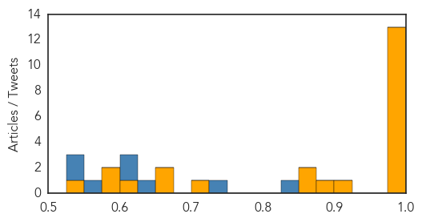
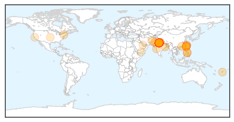
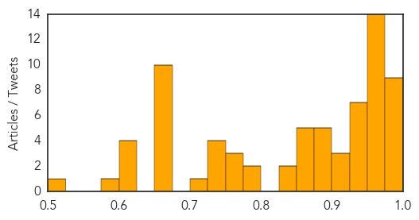

Ebola
30-Day Web Trend
0 alerts, 0 warnings

30-Day Twitter Trend
0 alerts, 0 warnings

Article Locations

Article Confidences
Top Articles:
- 1.000
- New Ebola death in S.Leone dims optimism for epidemic's end
- 1.000
- News Scan for Sep 14, 2015
- 1.000
- New Ebola death in S.Leone dims optimism for epidemic's end
- 0.999
- Hundreds quarantined as Ebola returns to north Sierra Leone district
- 0.999
- New Ebola death in Sierra Leone
- 0.999
- Ebola workshop prepares for the worst
- 0.998
- Hundreds quarantined following new Ebola fatality in Sierra Leone
- 0.998
- Quarantines return as Ebola makes comeback in Sierra Leone
- 0.998
- Hundreds quarantined as Ebola returns to north Sierra Leone district
- 0.995
- LIBERIA: Ebola Deaths Rise In Liberia, Health Minister Confirms
- 0.993
- Former Las Vegan travels the world to fight diseases
- 0.986
- Waves of Grace: An Ebola Survivor's Story in Virtual-Reality
- 0.985
- Two Doctors Find Possible Cure for Ebola, Costing Under $10
- 0.907
- Ellen, Boakai receive post-Ebola honor
- 0.897
- DARPA is developing human bio-factories to brew lifesaving vaccines
- 0.868
- ‘A Show of Solidarity’: Ellen Extols IMF Managing Director
- 0.857
- Better surveillance and improved sampling tactics of wild animal populations could impact public health
- 0.716
- ‘No regrets’ for Fife Ebola nurse Pauline Cafferkey
- 0.673
- UN to give more support to reproductive health « Awoko Newspaper
- 0.670
- Improving the resilience and workforce of health systems for women’s, children’s, and adolescents’ health
- 0.618
- Ebola, Education And Innovation In Sierra Leone - Sierra Leone
- 0.590
- IMF commits to post-Ebola recovery here
- 0.575
- WOLTERS KLUWER : WHOs HINARI Program Partners with Wolters Kluwer to Provide UpToDate to Ebola-affected African Countries
- 0.547
- WHO urges European action on migrant health
Top Tweets:
- 0.974
- New Ebola death in Sierra Leone - Yahoo News http://t.co/uIRZFQPbnA ebola EVD
- 0.874
- Should Apes Be Saved From Ebola? - The Atlantic http://t.co/vo5kVt7VgE ebola EVD
- 0.869
- Genetic Mutations Identified That Help Ebola Virus Evade Drug Treatment -... http://t.co/2KnyLOLd5W
- 0.866
- DCHHS recognized by CDC for handling of 2014 Ebola outbreak - Star Local Media http://t.co/KzgtDjgsj5 ebola EVD
- 0.821
- RT: Decoding Ebola: Next-Generation Sequencing of the Ebola Genome for the FDA ARGOS Database http://t.co/5IwqbWEtU2
- 0.790
- Sex, masturbation may hinder total eradication of Ebola - The Guardian Nigeria (satire) (press rel... http://t.co/YIQFtDUkFn ebola EVD
- 0.749
- RT: RD: Recent Ebola outbreak demonstrated that the int'l community not prepared for major health concerns. This is a defining …
- 0.703
- RT: New Ebola Test Could Help Curb Disease Spread (Medical Press) - http://t.co/ViGL2Kibyt
- 0.652
- How can we improve health information systems in West Africa to prepare for future outbreaks like Ebola? http://t.co/uB2X1Y3kFM
- 0.623
- RT: A 16yr old girl in Bombali district near Guinea border tests positive for Ebola, brings SierraLeone's weekly tally…
- 0.622
- Panelists to discuss current state of Ebola epidemic at O'Neill Institute ... - http://t.co/A9wAAOLz1c http://t.co/vgZ7sOp6ba ebola EVD
- 0.619
- 14 Sept - news pouch on avianflu avianinfluenza Ebola EbolaResponse MERS is here: http://t.co/DJmKN24K1Q
- 0.574
- Hundreds quarantined as Ebola returns to north Sierra Leone district - Channel News Asia http://t.co/OealJvYaiV
- 0.549
- Christie recalls Maine's gift to N.J. last year - the 'Ebola nurse' - http://t.co/gJHXqVkJbV http://t.co/vFTyeDPbUB ebola EVD
- 0.548
- After Ebola: Survivors' Soccer Club Helps Erase Stigma In Sierra Leone -... http://t.co/8F4tOvl4ps
- 0.547
- 1 of the Ebola antibody cocktails that gave rise to ZMapp fails to protect some primates; virus mutations blamed. http://t.co/rpqxtztOq7
- 0.532
- Foster Families Help Liberia's Ebola Orphans Towards Recovery - http://t.co/NaiI6Jl8yj http://t.co/xqFwvHpgaH ebola EVD
- 0.529
- RT: Migrants in car arrive with Ebola in Europe ebola migrantcrisis migrants refugeescrisis refugeeswelcome https://…
Dengue Fever
30-Day Web Trend
6 alerts, 1 warnings

30-Day Twitter Trend
4 alerts, 0 warnings

Article Locations
Article Confidences
Top Articles:
- 0.994
- Dengue deaths under-reported in Delhi
- 0.994
- Tainan Enterprises : Dengue fever escalation sets single-day record: CDC
- 0.993
- Delhi battles severe dengue outbreak, 'worst yet to come'
- 0.991
- Health scare: Dengue cases past 1,800, CM Arvind Kejriwal says tackle panic
- 0.990
- Delhi Government Cancels Leave Of Doctors, Launches Helpline To Tackle Dengue Outbreak
- 0.982
- Overworked doctors, patients sharing beds: Health Minister, please get more serious about dengue
- 0.982
- Delhi to buy 1,000 new beds, deploy more doctors
- 0.981
- Dengue out of control, no chutti for doctors
- 0.979
- Dengue scare grips Delhi, 613 fresh cases in a week
- 0.971
- Dengue cases up in Marinduque
- 0.971
- Dengue cases rise nearly to 200 in Gurgaon
- 0.970
- Tainan Enterprises : Taipei confirms new case of dengue fever, bringing total to 12
- 0.967
- Delhi orders extra hospital beds to tackle dengue cases
- 0.965
- Rise in dengue cases prompt MCD to step up action
- 0.965
- Parents' suicide over son's death forces Delhi to tackle dengue
- 0.959
- Centre: Check fleecing by pvt hospitals in capital
- 0.958
- Delhi Govt told to clamp down on pvt hospitals overcharging dengue patients
- 0.956
- 1,000 more beds for dengue patients in city govt hospitals
- 0.953
- Stung by couple's suicide over son's death, Delhi to tackle dengue
- 0.953
- Latest Political News, Business, Sports News, Entertainment News World News, Features, Video and Infographics
- 0.953
- More doctors, paramedics to be deployed to tackle dengue
- 0.952
- City dengue toll goes up to 11
- 0.950
- Union Health Minister reviews preparedness on Dengue
- 0.949
- Taiwan forms command center to combat dengue fever
- 0.948
- Rising dengue casualties:government hospitals cancel doctors, nurses, para-medics' leave
- 0.943
- North civic body opens fever clinics in its five hospitals, all polyclinics
- 0.937
- Taiwan forms command center to combat dengue fever
- 0.936
- Parents' suicide over son's death forces Delhi to tackle dengue
- 0.932
- Delhi orders extra hospital beds after dengue outbreak
- 0.930
- Taiwan dengue outbreak: Dengue NS1 antigen test to be covered by National Health Insurance
- 0.925
- Rise in dengue cases prompt MCD to step up action
- 0.924
- Dengue: Delhi hospitals told to buy 1,000 beds
- 0.920
- Dengue menace: Govt hospitals asked to open 'Fever Clinics' in Delhi
- 0.893
- Delhi govt asks hospitals to open Fever Clinics
- 0.889
- Govt to buy 1000 beds for dengue patients
- 0.889
- Pacific prepares for strengthening El Niño - World
- 0.887
- Dengue: Centre orders action for overcharging for tests
- 0.885
- Dengue menace: Govt hospitals asked to open Fever Clinics
- 0.870
- Govt Hospitals Asked To Open Fever Clinics In Delhi
- 0.870
- Dengue: Centre orders action for overcharging for tests
- 0.863
- Dengue Situation Under Control, Says Delhi Health Minister
- 0.861
- Delhi BJP flays AAP govt over 'failure' to check dengue spread
- 0.856
- Pacific region prepares for strengthening of El Nino: UN
- 0.849
- Delhi govt asks MCDs to go for door-to-door dengue preventive
- 0.839
- Delhi BJP Slams AAP Govt Over ' Complete Failure' In Checking Dengue Menace
- 0.791
- 1,000 new beds for dengue patients in hospitals
- 0.776
- Delhi BJP flays AAP govt over 'failure' to check dengue spread
- 0.775
- Dengue can get worse in Delhi in coming days
- 0.774
- Taipei confirms new case of dengue fever, bringing total to 12
- 0.767
- Dengue: Centre asks Delhi govt to increase hospital beds
Showing top 50 articles...
Top Tweets:
- 0.593
- RT: A School of Public Health study uses cell-phone records to predict the spread of dengue fever. http://t.co/VFHgoJQMCy